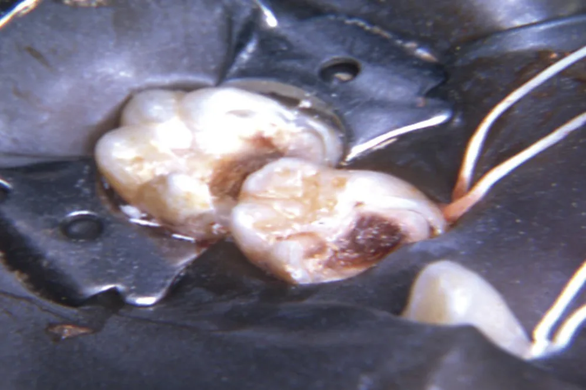

نسخه استخراجشده؛ ترجمه یا تأیید علمی انجام نشده است. وضعیت: captured
در پالپکپ غیرمستقیم دندان شیری، لایهی عمیق عاج نرم و آلوده را که برداشتنش به اکسپوژر پالپ میانجامد، عمداً باقی میگذاری و روی آن سیل میزنی.
چرا جواب میدهد؟ وقتی حفره کاملاً سیل شود، باکتریهای باقیمانده از منبع غذایی خود قطع میشوند و فعالیتشان بهشدت افت میکند. پالپ زنده هم فرصت مییابد عاج ترمیمی بسازد.
شرط اصلی: پالپ باید سالم یا در حد التهاب برگشتپذیر باشد — یعنی بدون درد خودبهخودی، بدون سینوس تراکت، و بدون یافتهی رادیوگرافیک.
موفقیت این درمان نه به مادهای که زیر میگذاری، بلکه به کیفیت سیل شدن ترمیم بستگی دارد.
اگر ترمیم نشت کند، باکتری دوباره تغذیه میشود و ضایعه پیش میرود — و این بار زیر ترمیم و بدون دیده شدن.
پس ترتیب اولویتها این است: ۱) تشخیص درست وضعیت پالپ، ۲) برداشتن کامل پوسیدگی از دیوارهها و مرزهای مینایی، ۳) سیل کردن مطمئن.
برداشتن ناقص فقط برای کف عمیق و نزدیک پالپ مجاز است، نه برای دیوارهها.
